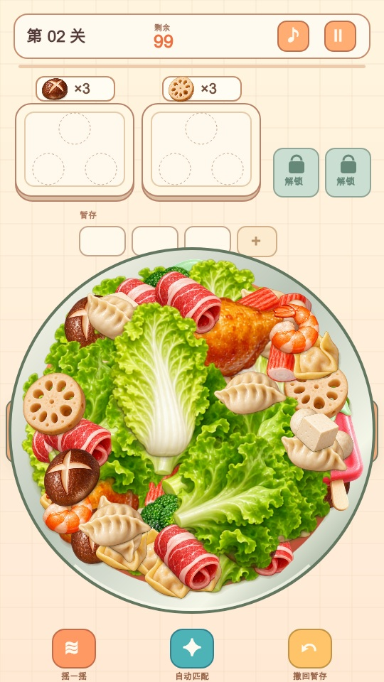
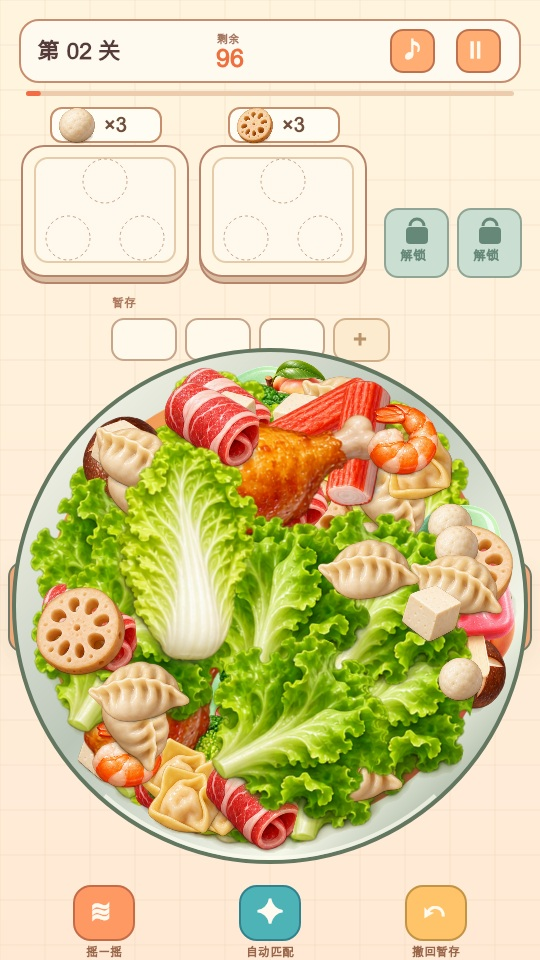
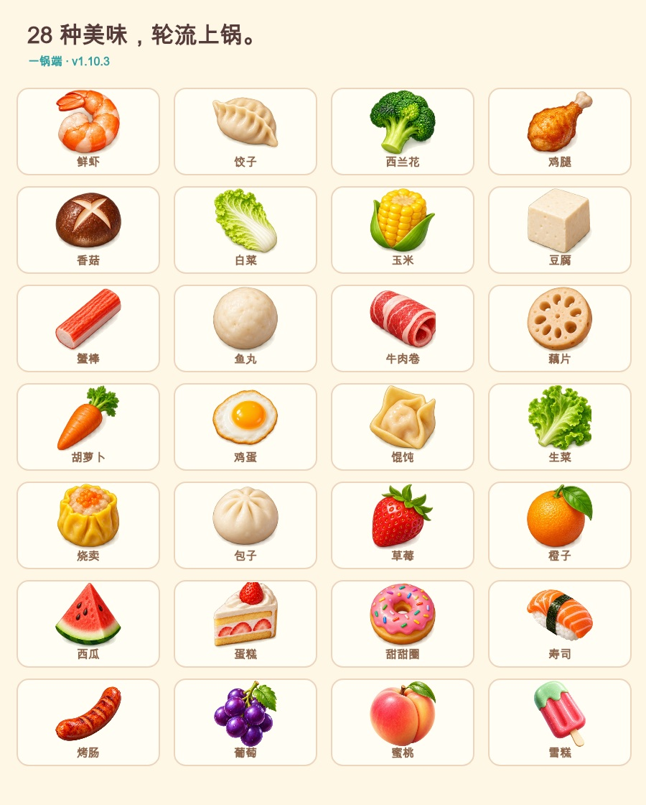

每关99件、15种食物。全库28种，50关轮换。
满满一锅 · 快乐开消
好东西，一锅端。
在热闹的一锅里，找到属于你的美味。
Version 1.10.3 · 修订中（WIP） · 2026-10-15
手机竖屏 · 无需账号 · 浏览器本地保存进度
找准时机，点到美味。
少一点文字，多一点手感。
三角形三个位置。凑齐同类食物，满盘飞走，新盘到位。
随机分散、碰撞漂动。点走一个，邻居慢慢补位；露出的部分才有机会点中。
暂存只存不消。下一盘从库存中随机预排，恰好匹配才会移入目标盘。



演示素材：v1.10.3。由当前引擎与素材离线渲染；展示布局为绘图重现，不是浏览器截图或手机性能测试。
看它动起来。
正常游戏时间 · 无声演示
选择由脚本执行，位置通过实际食物像素轮廓核对。演示不验证真实触控与语音。下载视频
这次更新 · v1.10.3
- 重新生成30帧视频，缩小文件，缩短关键帧间隔。
- 提前缓冲视频，缓冲或加载失败时显示提示。
- 更新演示素材、版本与更新记录。
打开就玩。
在手机上打开游戏，点“开始游戏”。优先收集目标盘所需的食物，留意暂存容量。
进度、离线与开发状态
进度保存在当前浏览器，设备间没有自动同步。首次在线成功加载后可缓存游戏资源；简介视频与图片按需加载。清理网站数据会清除进度。
仍在修订难度、动画与手机适配。广告为占位演示；完整堆叠可解性、真实手机性能与麦克风能力尚未验证。